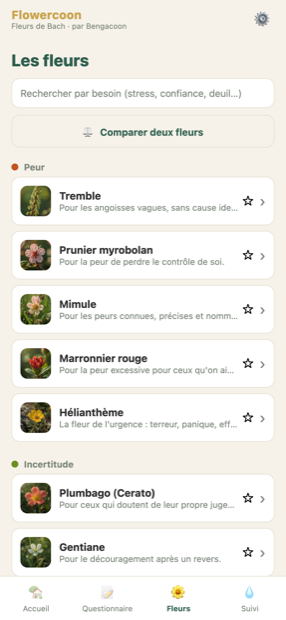
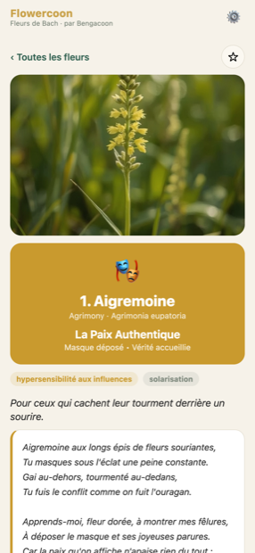
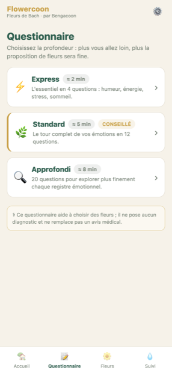
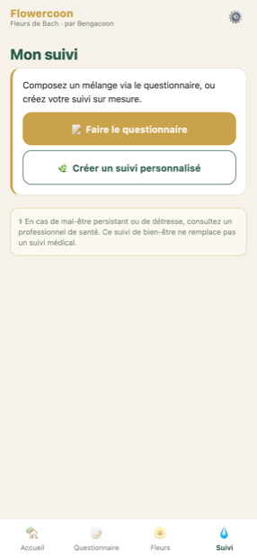

Votre compagnon des Fleurs de Bach : une application douce et illustrée pour accompagner vos émotions, jour après jour.




Découvrir, comprendre et suivre vos Fleurs de Bach — sans compte, sans jargon.
Les 38 Fleurs de Bach et le Rescue, chacune avec sa photo, son état émotionnel, son côté lumineux et sa part d'ombre. Recherche par besoin et comparateur de deux fleurs.
Faites le point en douceur : Flowercoon compose un mélange personnalisé de fleurs avec sa posologie, et vous montre en quoi chacune répond à votre état.
Notez vos prises, votre humeur et votre énergie. Rappels adaptés, graphiques de progrès, et possibilité de créer votre propre suivi sur mesure.
Marquez vos fleurs préférées, tenez un journal daté, gagnez des badges de régularité, et retrouvez une « fleur du jour » à chaque ouverture.
Un moment difficile ? Un exercice de cohérence cardiaque guidé (l'écran reste allumé) et le mélange de secours, toujours à portée de main.
Au-delà des fleurs du Dr Bach, une collection d'essences australiennes et californiennes illustrées, à explorer avec la version Premium.
Aucune donnée envoyée sur Internet, aucun compte à créer. Verrouillage par code ou Face ID, export et import de vos données quand vous le souhaitez.